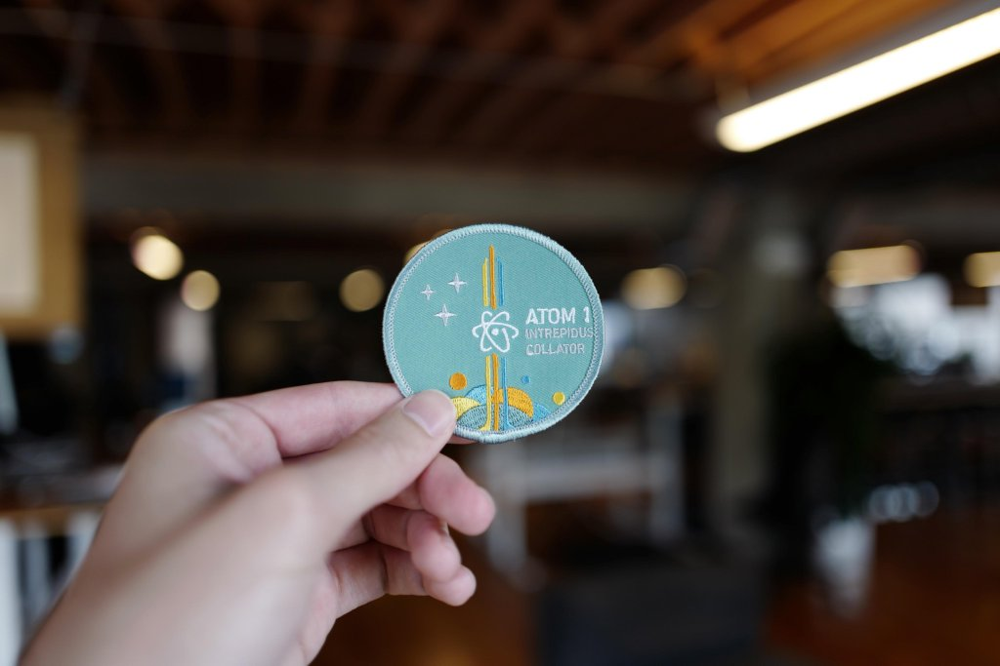
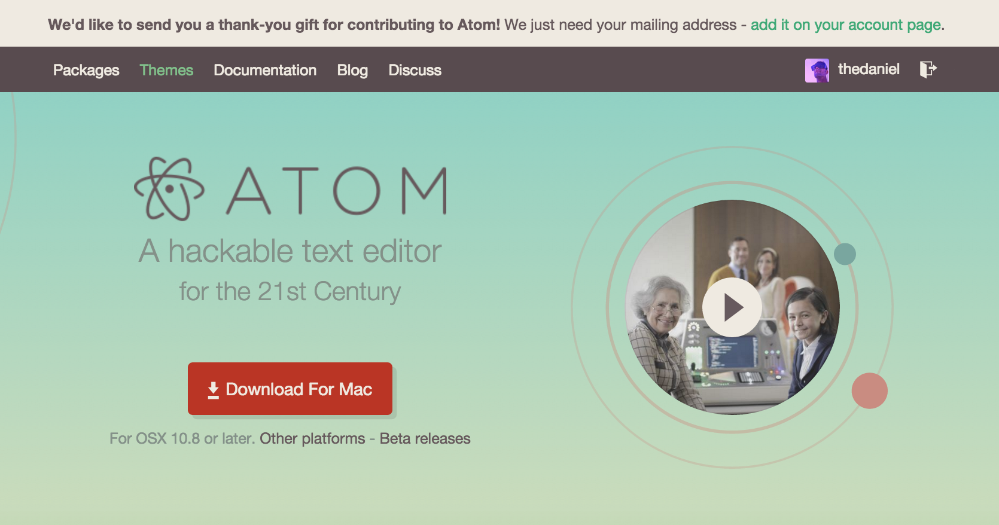

Atom 1.0 Contributor Patches
November 16, 2015 thedaniel
Tweet
To celebrate our 1.0 release at the end of June this year, we produced a limited-edition patch for people that contributed to the editor leading up to this important milestone.

(Image courtesy Max Schoening.)
We started showing a message at the top of atom.io to users eligible for the patch letting them know that we wanted to send them something special. Until today, we haven’t publicized it any further, because we wanted it to be a nice surprise.  We’ve sent out quite a few patches already, but before we stop producing them we wanted to let everyone know, so that contributors eligible to receive a patch don’t miss out.
We’ve sent out quite a few patches already, but before we stop producing them we wanted to let everyone know, so that contributors eligible to receive a patch don’t miss out.
So, if you:
- Published a package to atom.io before Atom 1.0 was released on June 25, or
- contributed to atom/atom or one of its bundled core packages before that date
… you should see a header on the site that looks like this:

If you contributed pre-1.0 and you don’t see this header after logging in, feel free to get in touch. We will collect addresses through the end of November, and after that we won’t ever make this patch again.